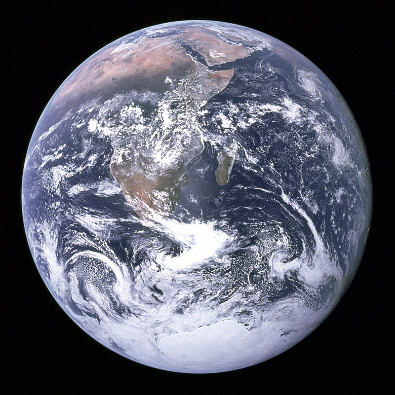

Our Solar System
The Solar System is the gravitationally bound planetary system of the Sun and the objects that orbit it, either directly or indirectly. Of the objects that orbit the Sun directly, the largest are the eight planets, with the remainder being smaller objects, such as the five dwarf planets and small Solar System bodies.
The Solar System formed 4.6 billion years ago from the gravitational collapse of a giant interstellar molecular cloud. The vast majority of the system's mass is in the Sun, with the majority of the remaining mass contained in Jupiter. The four smaller inner planets, Mercury, Venus, Earth and Mars, are terrestrial planets, being primarily composed of rock and metal. The four outer planets are giant planets, being substantially more massive than the terrestrials. The two largest, Jupiter and Saturn, are gas giants, being composed mainly of hydrogen and helium; the two outermost planets, Uranus and Neptune, are ice giants, being composed mostly of substances with relatively high melting points compared with hydrogen and helium, called volatiles, such as water, ammonia and methane. All eight planets have almost circular orbits that lie within a nearly flat disc called the ecliptic.
The Solar System formed 4.6 billion years ago from the gravitational collapse of a giant interstellar molecular cloud. The vast majority of the system's mass is in the Sun, with the majority of the remaining mass contained in Jupiter. The four smaller inner planets, Mercury, Venus, Earth and Mars, are terrestrial planets, being primarily composed of rock and metal. The four outer planets are giant planets, being substantially more massive than the terrestrials. The two largest, Jupiter and Saturn, are gas giants, being composed mainly of hydrogen and helium; the two outermost planets, Uranus and Neptune, are ice giants, being composed mostly of substances with relatively high melting points compared with hydrogen and helium, called volatiles, such as water, ammonia and methane. All eight planets have almost circular orbits that lie within a nearly flat disc called the ecliptic.
Sun
The Sun is the star at the center of the Solar System. It is a nearly perfect sphere of hot plasma, with internal convective motion that generates a magnetic field via a dynamo process. It is by far the most important source of energy for life on Earth. Its diameter is about 1.39 million kilometers (864,000 miles), or 109 times that of Earth, and its mass is about 330,000 times that of Earth. It accounts for about 99.86% of the total mass of the Solar System. Roughly three quarters of the Sun's mass consists of hydrogen (~73%); the rest is mostly helium (~25%), with much smaller quantities of heavier elements, including oxygen, carbon, neon, and iron.
The Sun is a G-type main-sequence star (G2V) based on its spectral class. As such, it is informally and not completely accurately referred to as a yellow dwarf (its light is closer to white than yellow). It formed approximately 4.6 billion years ago from the gravitational collapse of matter within a region of a large molecular cloud. Most of this matter gathered in the center, whereas the rest flattened into an orbiting disk that became the Solar System. The central mass became so hot and dense that it eventually initiated nuclear fusion in its core. It is thought that almost all stars form by this process.
The Sun is a G-type main-sequence star (G2V) based on its spectral class. As such, it is informally and not completely accurately referred to as a yellow dwarf (its light is closer to white than yellow). It formed approximately 4.6 billion years ago from the gravitational collapse of matter within a region of a large molecular cloud. Most of this matter gathered in the center, whereas the rest flattened into an orbiting disk that became the Solar System. The central mass became so hot and dense that it eventually initiated nuclear fusion in its core. It is thought that almost all stars form by this process.
Mercury
 Mercury is the smallest and innermost planet in the Solar System. Its orbital period around the Sun of 87.97 days is the shortest of all the planets in the Solar System. It is named after the Roman deity Mercury, the messenger of the gods.
Mercury is the smallest and innermost planet in the Solar System. Its orbital period around the Sun of 87.97 days is the shortest of all the planets in the Solar System. It is named after the Roman deity Mercury, the messenger of the gods.
Like Venus, Mercury orbits the Sun within Earth's orbit as an inferior planet, and never exceeds 28° away from the Sun when viewed from Earth. This proximity to the Sun means the planet can only be seen near the western or eastern horizon during the early evening or early morning. At this time it may appear as a bright star-like object, but is often far more difficult to observe than Venus. The planet telescopically displays the complete range of phases, similar to Venus and the Moon, as it moves in its inner orbit relative to Earth, which reoccurs over the so-called synodic period approximately every 116 days.
Venus
 Venus is the second planet from the Sun, orbiting it every 224.7 Earth days. It has the longest rotation period (243 days) of any planet in the Solar System and rotates in the opposite direction to most other planets (meaning the Sun rises in the west and sets in the east). It does not have any natural satellites. It is named after the Roman goddess of love and beauty. It is the second-brightest natural object in the night sky after the Moon, reaching an apparent magnitude of −4.6 – bright enough to cast shadows at night and, rarely, visible to the naked eye in broad daylight. Orbiting within Earth's orbit, Venus is an inferior planet and never appears to venture far from the Sun; its maximum angular distance from the Sun (elongation) is 47.8°.
Venus is the second planet from the Sun, orbiting it every 224.7 Earth days. It has the longest rotation period (243 days) of any planet in the Solar System and rotates in the opposite direction to most other planets (meaning the Sun rises in the west and sets in the east). It does not have any natural satellites. It is named after the Roman goddess of love and beauty. It is the second-brightest natural object in the night sky after the Moon, reaching an apparent magnitude of −4.6 – bright enough to cast shadows at night and, rarely, visible to the naked eye in broad daylight. Orbiting within Earth's orbit, Venus is an inferior planet and never appears to venture far from the Sun; its maximum angular distance from the Sun (elongation) is 47.8°.
Venus is a terrestrial planet and is sometimes called Earth's "sister planet" because of their similar size, mass, proximity to the Sun, and bulk composition. It is radically different from Earth in other respects. It has the densest atmosphere of the four terrestrial planets, consisting of more than 96% carbon dioxide. The atmospheric pressure at the planet's surface is 92 times that of Earth, or roughly the pressure found 900 m (3,000 ft) underwater on Earth. Venus is by far the hottest planet in the Solar System, with a mean surface temperature of 735 K (462 °C; 863 °F), even though Mercury is closer to the Sun. Venus is shrouded by an opaque layer of highly reflective clouds of sulfuric acid, preventing its surface from being seen from space in visible light. It may have had water oceans in the past, but these would have vaporized as the temperature rose due to a runaway greenhouse effect. The water has probably photodissociated, and the free hydrogen has been swept into interplanetary space by the solar wind because of the lack of a planetary magnetic field. Venus's surface is a dry desertscape interspersed with slab-like rocks and is periodically resurfaced by volcanism.
Earth

Earth is the third planet from the Sun and the only astronomical object known to harbor life. According to radiometric dating and other sources of evidence, Earth formed over 4.5 billion years ago. Earth's gravity interacts with other objects in space, especially the Sun and the Moon, Earth's only natural satellite. Earth revolves around the Sun in 365.26 days, a period known as an Earth year. During this time, Earth rotates about its axis about 366.26 times.
Earth's axis of rotation is tilted with respect to its orbital plane, producing seasons on Earth. The gravitational interaction between Earth and the Moon causes ocean tides, stabilizes Earth's orientation on its axis, and gradually slows its rotation. Earth is the densest planet in the Solar System and the largest of the four terrestrial planets.
Earth's axis of rotation is tilted with respect to its orbital plane, producing seasons on Earth. The gravitational interaction between Earth and the Moon causes ocean tides, stabilizes Earth's orientation on its axis, and gradually slows its rotation. Earth is the densest planet in the Solar System and the largest of the four terrestrial planets.
Mars
 Mars is the fourth planet from the Sun and the second-smallest planet in the Solar System after Mercury. In English, Mars carries a name of the Roman god of war, and is often referred to as the "Red Planet" because the reddish iron oxide prevalent on its surface gives it a reddish appearance that is distinctive among the astronomical bodies visible to the naked eye. Mars is a terrestrial planet with a thin atmosphere, having surface features reminiscent both of the impact craters of the Moon and the valleys, deserts, and polar ice caps of Earth.
Mars is the fourth planet from the Sun and the second-smallest planet in the Solar System after Mercury. In English, Mars carries a name of the Roman god of war, and is often referred to as the "Red Planet" because the reddish iron oxide prevalent on its surface gives it a reddish appearance that is distinctive among the astronomical bodies visible to the naked eye. Mars is a terrestrial planet with a thin atmosphere, having surface features reminiscent both of the impact craters of the Moon and the valleys, deserts, and polar ice caps of Earth.
The rotational period and seasonal cycles of Mars are likewise similar to those of Earth, as is the tilt that produces the seasons. Mars is the site of Olympus Mons, the largest volcano and second-highest known mountain in the Solar System, and of Valles Marineris, one of the largest canyons in the Solar System. The smooth Borealis basin in the northern hemisphere covers 40% of the planet and may be a giant impact feature. Mars has two moons, Phobos and Deimos, which are small and irregularly shaped. These may be captured asteroids, similar to 5261 Eureka, a Mars trojan.
Jupiter
 Jupiter is the fifth planet from the Sun and the largest in the Solar System. It is a giant planet with a mass one-thousandth that of the Sun, but two-and-a-half times that of all the other planets in the Solar System combined. Jupiter and Saturn are gas giants; the other two giant planets, Uranus and Neptune, are ice giants. Jupiter has been known to astronomers since antiquity. It is named after the Roman god Jupiter. When viewed from Earth, Jupiter can reach an apparent magnitude of −2.94, bright enough for its reflected light to cast shadows, and making it on average the third-brightest natural object in the night sky after the Moon and Venus.
Jupiter is the fifth planet from the Sun and the largest in the Solar System. It is a giant planet with a mass one-thousandth that of the Sun, but two-and-a-half times that of all the other planets in the Solar System combined. Jupiter and Saturn are gas giants; the other two giant planets, Uranus and Neptune, are ice giants. Jupiter has been known to astronomers since antiquity. It is named after the Roman god Jupiter. When viewed from Earth, Jupiter can reach an apparent magnitude of −2.94, bright enough for its reflected light to cast shadows, and making it on average the third-brightest natural object in the night sky after the Moon and Venus.
Jupiter is primarily composed of hydrogen with a quarter of its mass being helium, though helium comprises only about a tenth of the number of molecules. It may also have a rocky core of heavier elements, but like the other giant planets, Jupiter lacks a well-defined solid surface. Because of its rapid rotation, the planet's shape is that of an oblate spheroid (it has a slight but noticeable bulge around the equator). The outer atmosphere is visibly segregated into several bands at different latitudes, resulting in turbulence and storms along their interacting boundaries. A prominent result is the Great Red Spot, a giant storm that is known to have existed since at least the 17th century when it was first seen by telescope. Surrounding Jupiter is a faint planetary ring system and a powerful magnetosphere. Jupiter has 79 known moons, including the four large Galilean moons discovered by Galileo Galilei in 1610. Ganymede, the largest of these, has a diameter greater than that of the planet Mercury.
Saturn
 Saturn is the sixth planet from the Sun and the second-largest in the Solar System, after Jupiter. It is a gas giant with an average radius about nine times that of Earth. It has only one-eighth the average density of Earth, but with its larger volume Saturn is over 95 times more massive. Saturn is named after the Roman god of agriculture; its astronomical symbol (♄) represents the god's sickle.
Saturn is the sixth planet from the Sun and the second-largest in the Solar System, after Jupiter. It is a gas giant with an average radius about nine times that of Earth. It has only one-eighth the average density of Earth, but with its larger volume Saturn is over 95 times more massive. Saturn is named after the Roman god of agriculture; its astronomical symbol (♄) represents the god's sickle.
Saturn's interior is probably composed of a core of iron–nickel and rock (silicon and oxygen compounds). This core is surrounded by a deep layer of metallic hydrogen, an intermediate layer of liquid hydrogen and liquid helium, and finally a gaseous outer layer. Saturn has a pale yellow hue due to ammonia crystals in its upper atmosphere. Electrical current within the metallic hydrogen layer is thought to give rise to Saturn's planetary magnetic field, which is weaker than Earth's, but has a magnetic moment 580 times that of Earth due to Saturn's larger size. Saturn's magnetic field strength is around one-twentieth of Jupiter's. The outer atmosphere is generally bland and lacking in contrast, although long-lived features can appear. Wind speeds on Saturn can reach 1,800 km/h (1,100 mph; 500 m/s), higher than on Jupiter, but not as high as those on Neptune.
Uranus
 Uranus (from the Latin name "Ūranus" for the Greek god Οὐρανός) is the seventh planet from the Sun. It has the third-largest planetary radius and fourth-largest planetary mass in the Solar System. Uranus is similar in composition to Neptune, and both have bulk chemical compositions which differ from that of the larger gas giants Jupiter and Saturn. For this reason, scientists often classify Uranus and Neptune as "ice giants" to distinguish them from the gas giants. Uranus' atmosphere is similar to Jupiter's and Saturn's in its primary composition of hydrogen and helium, but it contains more "ices" such as water, ammonia, and methane, along with traces of other hydrocarbons. It is the coldest planetary atmosphere in the Solar System, with a minimum temperature of 49 K (−224 °C; −371 °F), and has a complex, layered cloud structure with water thought to make up the lowest clouds and methane the uppermost layer of clouds. The interior of Uranus is mainly composed of ices and rock.
Uranus (from the Latin name "Ūranus" for the Greek god Οὐρανός) is the seventh planet from the Sun. It has the third-largest planetary radius and fourth-largest planetary mass in the Solar System. Uranus is similar in composition to Neptune, and both have bulk chemical compositions which differ from that of the larger gas giants Jupiter and Saturn. For this reason, scientists often classify Uranus and Neptune as "ice giants" to distinguish them from the gas giants. Uranus' atmosphere is similar to Jupiter's and Saturn's in its primary composition of hydrogen and helium, but it contains more "ices" such as water, ammonia, and methane, along with traces of other hydrocarbons. It is the coldest planetary atmosphere in the Solar System, with a minimum temperature of 49 K (−224 °C; −371 °F), and has a complex, layered cloud structure with water thought to make up the lowest clouds and methane the uppermost layer of clouds. The interior of Uranus is mainly composed of ices and rock.
Uranus is the only planet whose name is derived directly from a figure from Greek mythology, from the Latinised version of the Greek god of the sky Ouranos.
Neptune
Neptune is the eighth and farthest known planet from the Sun in the Solar System. In the Solar System, it is the fourth-largest planet by diameter, the third-most-massive planet, and the densest giant planet. Neptune is 17 times the mass of Earth, slightly more massive than its near-twin Uranus. Neptune is denser and physically smaller than Uranus because its greater mass causes more gravitational compression of its atmosphere. Neptune orbits the Sun once every 164.8 years at an average distance of 30.1 AU (4.5 billion km). It is named after the Roman god of the sea and has the astronomical symbol ♆, a stylised version of the god Neptune's trident.
Like Jupiter and Saturn, Neptune's atmosphere is composed primarily of hydrogen and helium, along with traces of hydrocarbons and possibly nitrogen, though it contains a higher proportion of "ices" such as water, ammonia, and methane. However, similar to Uranus, its interior is primarily composed of ices and rock; Uranus and Neptune are normally considered "ice giants" to emphasise this distinction. Traces of methane in the outermost regions in part account for the planet's blue appearance.
Like Jupiter and Saturn, Neptune's atmosphere is composed primarily of hydrogen and helium, along with traces of hydrocarbons and possibly nitrogen, though it contains a higher proportion of "ices" such as water, ammonia, and methane. However, similar to Uranus, its interior is primarily composed of ices and rock; Uranus and Neptune are normally considered "ice giants" to emphasise this distinction. Traces of methane in the outermost regions in part account for the planet's blue appearance.